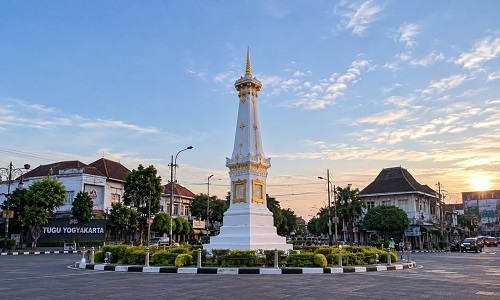
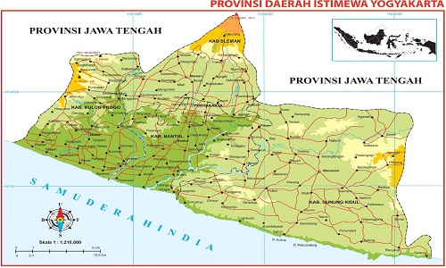
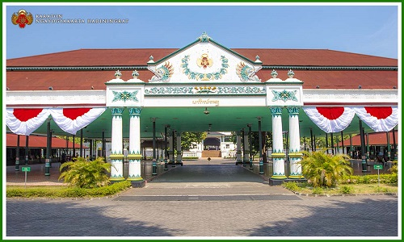
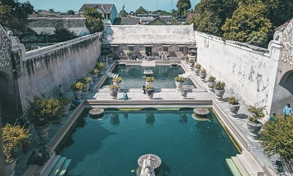
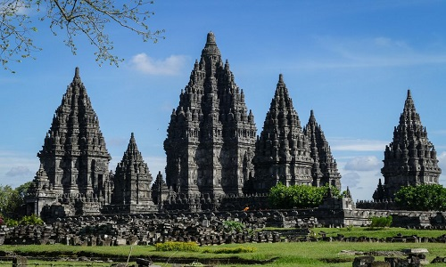

Sejarah

Yogyakarta bermula dari perpecahan Kesultanan Mataram Islam yang disahkan lewat Perjanjian Giyanti pada 13 Februari 1755.
Berdasarkan perjanjian tersebut, wilayah Mataram bagian barat diberikan kepada Pangeran Mangkubumi yang kemudian bergelar Sri Sultan Hamengku Buwono I.
Beliau lantas mendirikan istana dan pusat pemerintahan baru yang dikenal sebagai Kasultanan Ngayogyakarta Hadiningrat.
Dalam sejarahnya, Yogyakarta juga memegang peranan penting dalam mempertahankan kemerdekaan Republik Indonesia, sehingga dijuluki sebagai Kota Perjuangan.
Geografi

Secara astronomis, wilayah Yogyakarta terletak pada posisi sekitar 8º 30′ – 7º 20′ Lintang Selatan dan 109º 40′ – 111º 0′ Bujur Timur.
Bentang alamnya sangat beragam dan unik, terbentang dari utara hingga selatan dalam konsep Sumbu Filosofis yang menghubungkan Gunung Merapi, Keraton Yogyakarta, dan Laut Selatan (Pantai Parangtritis).
Fisiografi wilayahnya terbagi menjadi:Kawasan lereng dan gunung api aktif (Merapi)Pegunungan (seperti Pegunungan Sewu dan Kulon Progo)Dataran rendah tempat bermukimnya sebagian besar penduduk.
Wisata
Yogyakarta memiliki banyak pilihan tempat rekreasi menarik yang terbagi menjadi wisata sejarah, budaya, dan alam:Wisata Sejarah & Budaya:Keraton Yogyakarta: Istana peninggalan sultan yang masih aktif melestarikan tradisi Jawa.
Taman Sari: Komplek pemandian air milik raja dengan arsitektur kuno yang indah.
Candi Prambanan: Komplek candi Hindu terbesar di Indonesia yang diakui dunia.
Wisata Alam & Kreatif:Gumuk Pasir Parangkusumo: Kawasan gurun pasir unik di selatan Yogyakarta untuk sandboarding.
Heha Sky View & Puncak Becici: Destinasi perbukitan dengan pemandangan alam dari ketinggian.
Kawasan Malioboro: Pusat belanja dan jalan ikonik di jantung kota Yogyakarta.
Keraton Yogyakarta

Keraton Yogyakarta, atau secara resmi bernama Karaton Ngayogyakarta Hadiningrat, terletak di pusat Kota Yogyakarta, tepatnya di Jl. Rotowijayan No. 1, Panembahan, Kecamatan Kraton, Daerah Istimewa Yogyakarta.
Istana resmi Kesultanan Ngayogyakarta Hadiningrat ini berdiri kokoh di dalam kawasan historis Njeron Beteng (wilayah dalam benteng keraton) yang sangat strategis.
Posisinya berada di garis imajiner yang menghubungkan Gunung Merapi, Tugu Yogyakarta, Keraton, dan Pantai Parangtritis.
Dari kawasan wisata populer Jalan Malioboro, kompleks bersejarah ini hanya berjarak sekitar 1 kilometer ke arah selatan atau sekitar 10 menit berkendara.
Struktur tata ruangnya pun sangat ikonik, diapit langsung oleh dua lapangan luas, yaitu Alun-Alun Utara di sisi depan dan Alun-Alun Selatan di bagian belakang.
Taman Sari

Taman Sari terletak di Jl. Kompleks Taman Sari, Patehan, Kecamatan Kraton, Kota Yogyakarta, Daerah Istimewa Yogyakarta 55133.
Posisinya berada di dalam area benteng barat daya Keraton Yogyakarta.
Dari gerbang utama Keraton, situs bersejarah ini dapat dicapai dalam waktu kurang lebih 5 hingga 10 menit menggunakan kendaraan atau dengan berjalan kaki melewati kawasan permukiman penduduk lokal Kampung Wisata Taman Sari.
Candi Prambanan

Candi Prambanan terletak di Jl. Raya Solo - Yogyakarta, Kranggan, Bokoharjo, Kecamatan Prambanan, Kabupaten Sleman, Daerah Istimewa Yogyakarta 55571.
kompleks candi Hindu terbesar di Indonesia ini berdiri tepat di perbatasan wilayah antara Kabupaten Sleman (Daerah Istimewa Yogyakarta) dan Kabupaten Klaten (Jawa Tengah).
Gumuk Pasir

Gumuk Pasir Parangkusumo terletak di Jl. Pantai Parangkusumo, Kalurahan Parangtritis, Kapanewon Kretek, Kabupaten Bantul, Daerah Istimewa Yogyakarta.
Situs geo-heritage dunia yang unik ini berada di kawasan pantai selatan Bantul.
Posisinya bertetangga langsung dan berada di sebelah barat Pantai Parangtritis serta dekat dengan Pantai Depok.
Jaraknya sekitar 30 kilometer ke arah selatan dari pusat Kota Yogyakarta dengan waktu tempuh kurang lebih 60 hingga 90 menit berkendara.
Kawasan Malioboro
Kawasan Malioboro adalah jantung wisata sekaligus surga belanja legendaris di Yogyakarta.
Di kawasan ini, pilihan pusat perbelanjaan sangat variatif, mulai dari mal modern bergaya urban hingga pasar tradisional yang kental dengan budaya Javanese.